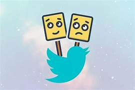

PROJECTS

Netflix-Clone
A Netflix clone app built using the MERN stack. Utilize technologies like React, Node.js, and a database.
GitHub Link

Twitter-Sentiment-Analysis
Develop a Twitter sentiment analysis tool using Python, machine learning, and NLP techniques.
GitHub Link